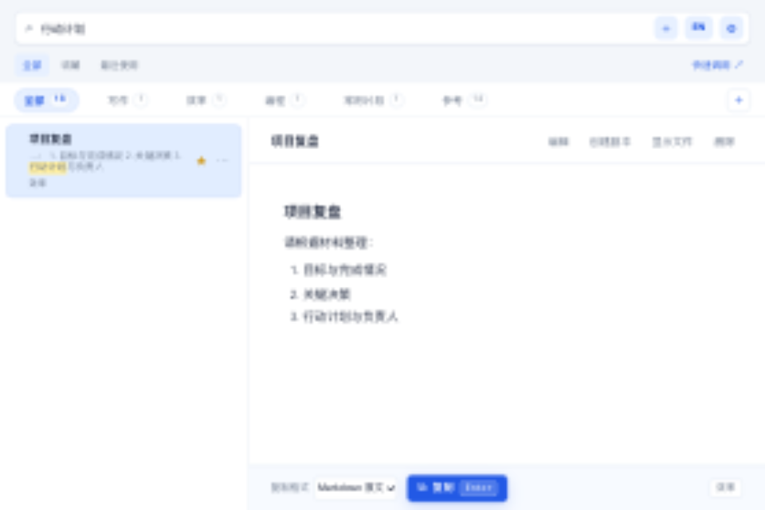

从搜索到复用
按标题或正文搜索，需要改写时填写模板，整理时切换到双栏界面。
按分类、收藏和最近使用整理库。在列表旁预览 Markdown、公式和图表。

- 一致的键盘操作
- Enter 调用，Shift+Enter 在 Markdown 和纯文本之间切换。
- 文件在本机，可恢复
- 编辑、覆盖或删除后，可从恢复记录找回旧版本。
- 按需同步
- 可手动同步到 GitHub 或坚果云 WebDAV。发生冲突时保留副本。
下载安装
Windows 支持返回原窗口自动粘贴。macOS 和 Linux 复制后手动粘贴。